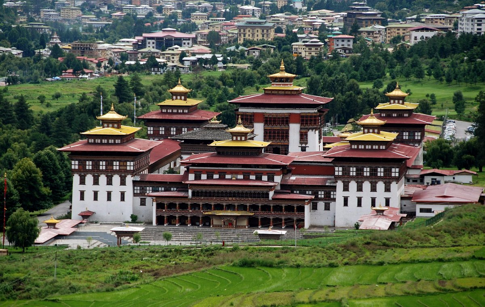

Embracing our heritage for future generations.
To safeguard Bhutanese traditions, language, and values while promoting cultural pride and awareness among youth and global communities.
Safeguarding traditional art forms, rituals, festivals, languages, and heritage sites to ensure their continuity for future generations. Organizing and supporting events, festivals, exhibitions, and programs that highlight the cultural identity and significance of Samtse Dzongkhag and Bhutan as a whole.I am a Bhutanese student named Satshoma Lhendup who is passionate about cultural heritage. This website is my initiative to educate, inspire, and connect people to the richness of Bhutanese traditions. Bhutanese people lack of promoting and preserving our culture , therefore I made Preservia to help not only Bhutanese people but those who are interested in our rich culture
Bhutan's unique culture is rooted in its spiritual values, traditional dress, festivals, architecture, and language. Efforts include:
For more information, visit us in Thimphu, Bhutan or reach out through our social platforms.
Email: satshomalhendup@education.gov.bt
Location: